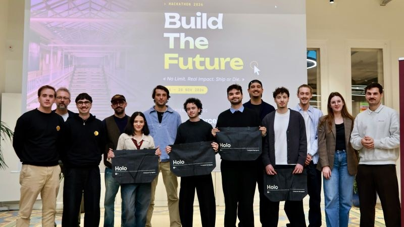
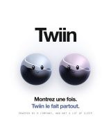
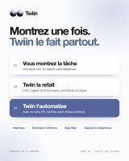
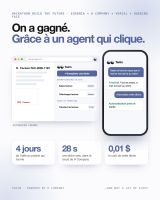
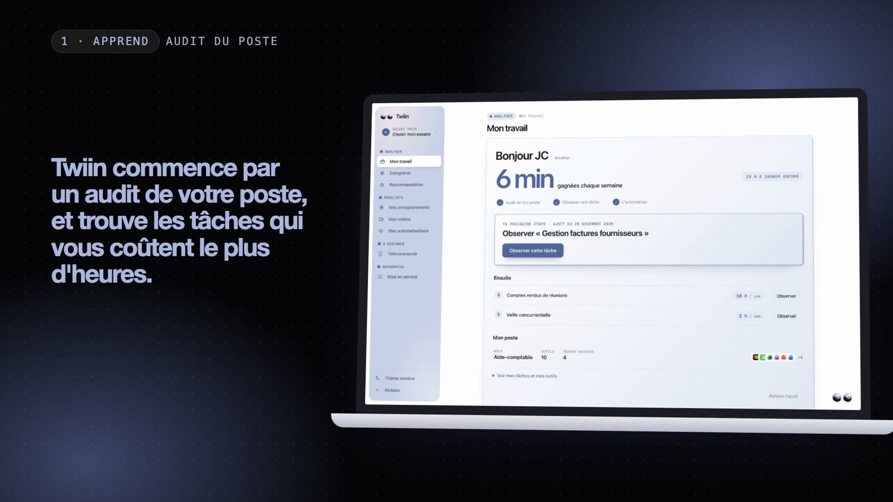
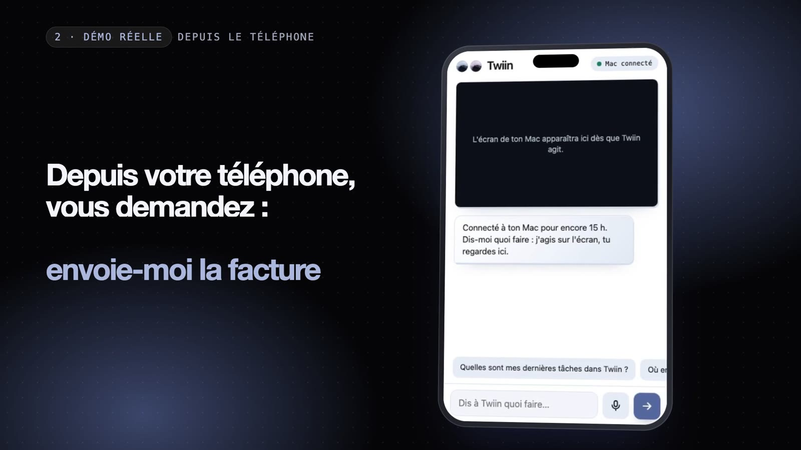
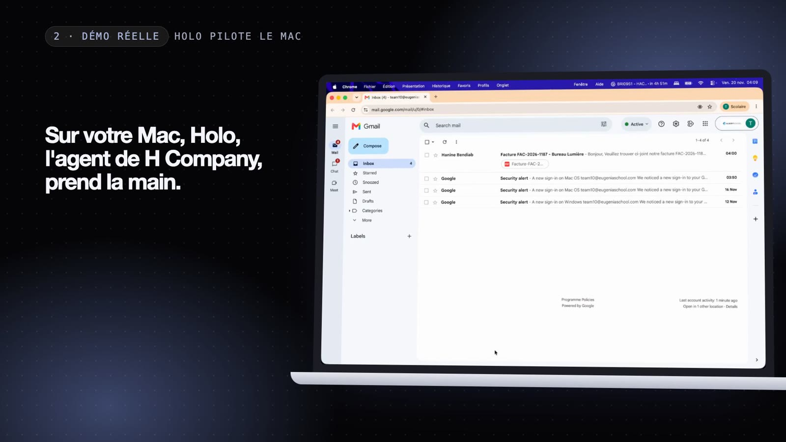
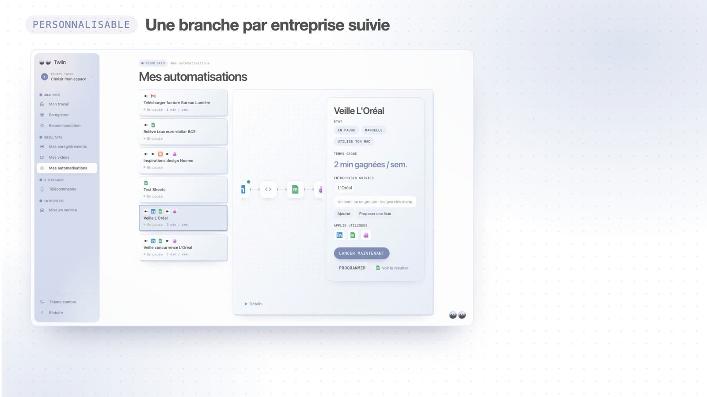
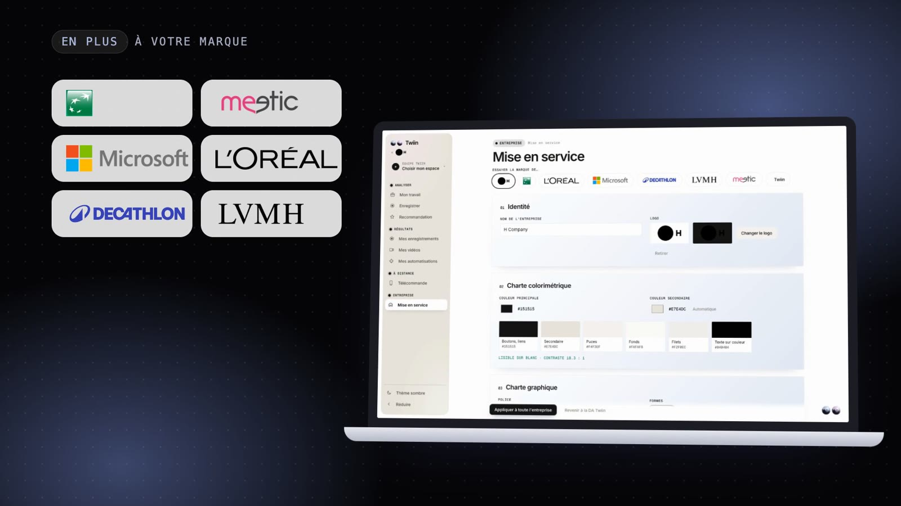
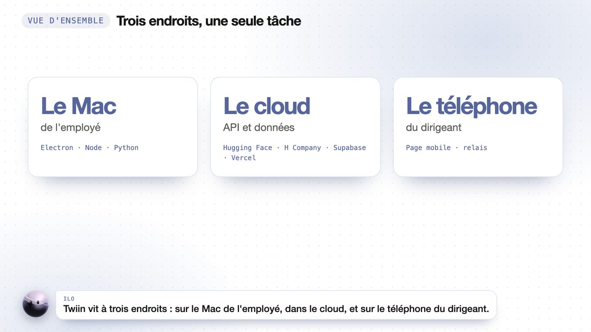

Montrez une fois. Twiin le fait partout.
Un agent qui apprend une tâche qu'on lui montre une seule fois, la rejoue, vérifie chaque valeur, puis l'automatise, avec ou sans API. Il s'appuie sur Holo, l'agent de H Company, qui voit l'écran et clique comme un humain. Projet vainqueur du hackathon Build The Future, du 16 au 20 novembre 2026.
Dans une PME, chaque employé perd environ 3 heures par semaine sur des tâches répétitives, souvent dans des logiciels qui n'ont pas d'API, et sans DSI pour les automatiser. Les outils classiques ne suffisent pas : les RPA demandent un développeur et cassent dès que l'écran change, et Zapier ou Make ne fonctionnent qu'avec des API.
Twiin part d'une idée simple : on lui montre la tâche une fois. Il la découpe en étapes, la rejoue pour prouver qu'elle tient, puis la fait à notre place, sur le Mac, dans le navigateur ou depuis le téléphone. Quand une API existe, Twiin passe par n8n ; quand il n'y en a pas, c'est Holo, l'agent de H Company, qui lit l'écran et clique.
Nous l'avons construit à six en cinq jours, pour le hackathon Build The Future organisé par H Company, et nous l'avons remporté. Le dernier soir, on a dormi deux heures. Twiin, lui, n'a pas besoin de dormir.




L'employé fait la tâche une fois, sur son ordinateur ou dans son navigateur, ou la demande depuis son téléphone. Les informations sensibles restent sur le poste et aucune frappe au clavier n'est enregistrée.
Une IA découpe la tâche en étapes et note les valeurs à vérifier. Twiin demande ensuite « Ai-je bien compris ? » pour que l'employé corrige avant d'automatiser.
Twiin transforme la tâche en automatisation, la rejoue et vérifie chaque valeur avant de l'activer. Une valeur douteuse est bloquée, jamais écrite.
Quand un logiciel n'a pas d'API, Holo, l'agent de H Company, prend la main : il voit l'écran et clique comme un humain, sur le Mac ou dans le cloud.
Enregistre la tâche, l'exécute et guide l'employé à l'écran avec les jumeaux Iris et Ilo. Installation en un clic.
Une bulle sur chaque page et un panneau latéral : la dernière tâche analysée, l'automatiser, créer la vidéo.
Le dirigeant demande, le Mac le fait. Le téléphone passe par un relais et n'accède jamais directement au poste.
Pour chaque tâche, une vidéo racontée par Iris et Ilo, aux couleurs de l'entreprise, pour que l'équipe comprenne ce que fait la machine.






Tous les tests ont été filmés de bout en bout la nuit du 19 au 20 novembre.